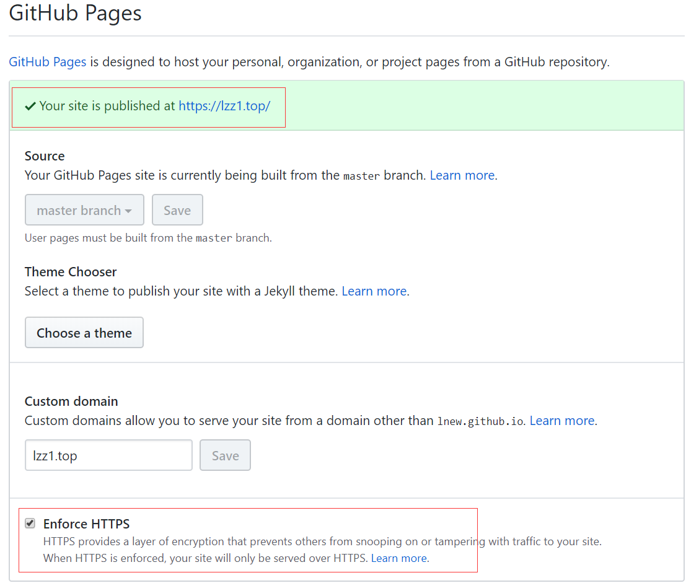

Hexo初学
特别感谢
第一次使用hexo建站，感谢hexo，虽然看了文档对一些操作还是很迷糊！最要感谢说IT作者——唐先森，我完全把唐先森的代码搬了下来，然后进行了研究修改，才懂得了一点点要怎么操作！😂，希望唐先森老哥不要介意。
踩的坑
最大的坑，就是 menu 这块了
menu: |
修改后老是找不到页面，最后发现要先运行如下命令
hexo new post xxx (文章名称)
默认就可以访问 tech-notes 这个菜单，暂时还不知道如何生成文章到 humanities,others 下，失败！😱
访问humanities，就把categories改成人文，然后就可以愉快的访问了
左边菜单的话，运行如下命令
hexo new page xxx (新页面)
粗暴修改评论
安装后发现评论显示不出来，网上查看后，说是被墙了，然后百度了新的评论插件，就是**Valine
- 前往Leancloud，注册一个账号，创建应用。
主题配置文件里增加下面信息
comments:
enable: true #
appId: #your leancloud appId
appKey: #your leancloud appKey
guest_info: nick,mail,link #valine comment header info
placeholder: 友善交流，不喜勿喷 # valine comment input placeholder(like: Please leave your footprints )
avatar: mm # gravatar style https://valine.js.org/avatar
pageSize: 10 # comment list page size
verify: false # valine verify code (true/false)
notify: false # valine mail notify (true/false)
lang: zh-cn到layout->_partial下修改comments.ejs，修改如下
<% if (theme.comments.enable){ %>
<section id="comments">
<div id="valine_thread" style="margin: 30px;"></div>
<script src="//cdn1.lncld.net/static/js/3.0.4/av-min.js"></script>
<script src="//unpkg.com/valine/dist/Valine.min.js"></script>
<script>
var GUEST_INFO = ['nick','mail','link'];
var guest_info = '<%= theme.comments.guest_info %>'.split(',').filter(function(item){
return GUEST_INFO.indexOf(item) > -1
});
var notify = '<%= theme.comments.notify %>' == true;
var verify = '<%= theme.comments.verify %>' == true;
var valine = new Valine();
valine.init({
el: '#valine_thread',
notify: notify,
verify: verify,
appId: "<%= theme.comments.appId %>",
appKey: "<%= theme.comments.appKey %>",
placeholder: "<%= theme.comments.placeholder %>",
pageSize:'<%= theme.comments.pageSize %>',
avatar:'<%= theme.comments.avatar %>',
lang:'<%= theme.comments.lang %>'
})
</script>
</section>
<% } %>
强制使用https访问
进入git仓库，点击最右边的Settings，如下图

现在可以愉快的自定义了，再次感谢 唐先森